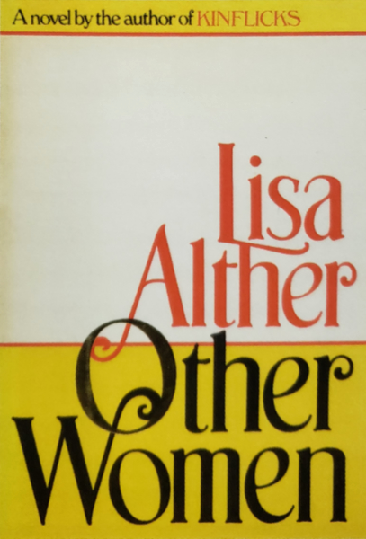

Back in 2012, fresh out of college, I worked with a web designer and consultant. One of the projects I got to work on was a side project of his called Kernest "Konstellations" -- a collection of CSS themes inspired by works of text. I did one based on the short story, "Yellow Wallpaper," (there was much yellow, a notoriously difficult color to work with I found). My predecessor did a more illustrative example, a dialogue taken from "Romeo and Juliet" where she used purples and reds to create a romantic mood. It was a fun project, and revisiting themes is something I occasionally get to do in my current work, but not often enough.
Recently, in the spring of 2020, it occurred to me that I was languishing creatively in my day job as an in-house web developer. Worse, I hadn't been making a concerted effort to develop my core front-end development tools, HTML and CSS. Luckily I found myself following Jen Simmons, a Designer and Developer Advocate at Mozilla, who produced fantastic videos exploring CSS grid and Flexbox. She produced a series of experiments (that you can find on her website here) that inspired me to look for examples in graphic design from other disciplines, and to try building them out in a web browser.
Here, I present my first entry into making NICE THINGS to improve my craft, for the funsies, and for anyone who might find it interesting or neat.
I discovered this book cover in a graphic design book my sister gave me many birthdays ago, called Stylepedia: A Guide to Graphic Design Mannerisms, Quirks, and Conceits by Steven Heller and Louise Fili. In their section titled "Big Book," the authors discuss the work of designer Paul Bacon, who in 1956 began the "Big Book Look" trend in book jacket design. This style should be familiar to avid readers: a prominent title and author's name set in large text. Bacon created the book jacket for Other Women by Lisa Alther for its debut in 1984.

The webfonts I found are not an exact replica of the type in this
design, but they convey a similar mood and character. I never learned
the typeface used for the author's name and title (if it is not instead
a hand-lettered type), and the closest match on Google fonts that I
liked the best was
Berkshire Swash. I had better luck with the small text, which I believe is
Windsor
thanks to the tool Identifont. Alas,
I am cheap and did not purchase a copy of it to use for this project, so
I found an alternative,
Tinos.
This was a fun first assignment. The colors are not something I would
normally choose, and the overlapping text and elements was an
interesting graphic design challenge to recreate with CSS grid. I'm
excited for the next piece I find!